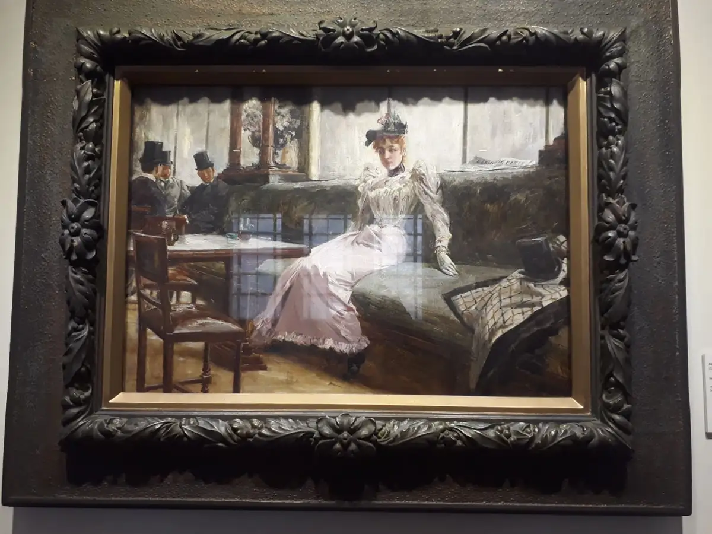
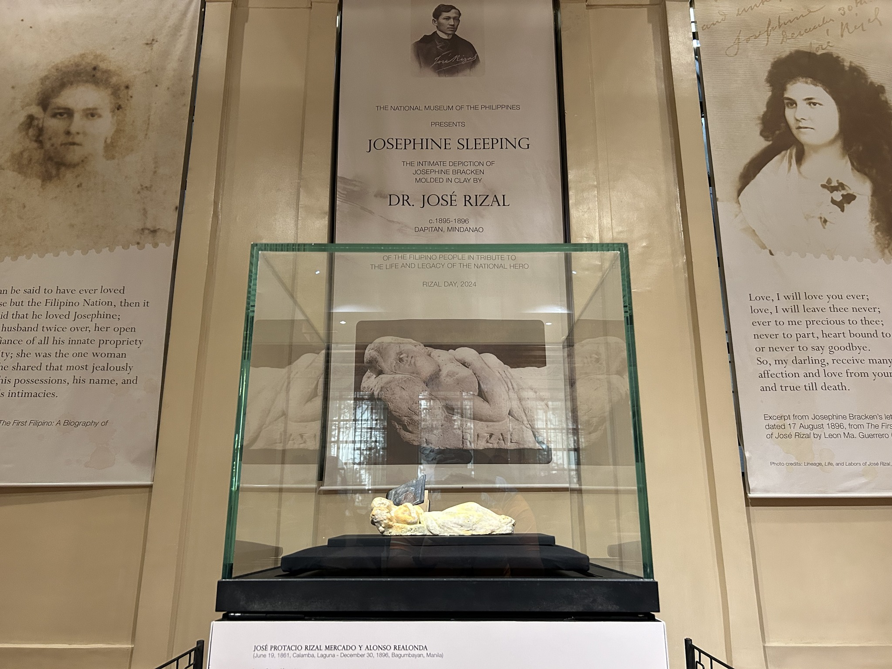
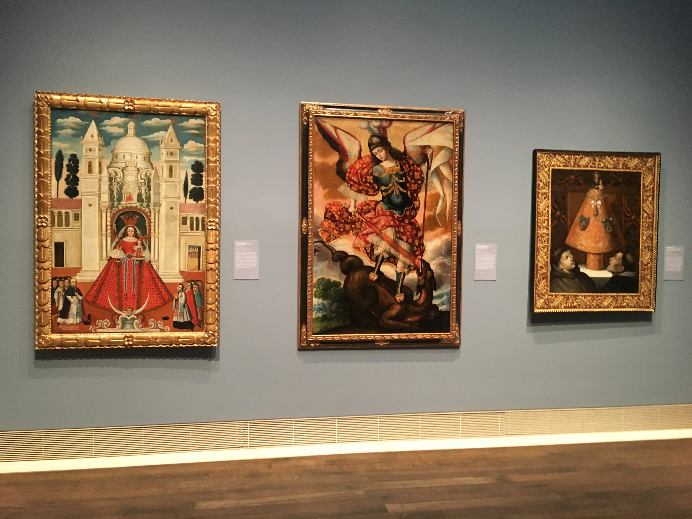

Spoliarium
Juan Luna’s monumental masterpiece depicting fallen gladiators, symbolizing struggle and heroism.

The Parisian Life
Juan Luna’s painting portraying the charm of European society and his early artistic influence.

Josephine
A notable portrait highlighting delicate expression and technique from Filipino colonial-era art.

Colonial Era Paintings
Depictions of life in the Philippines during Spanish colonial rule, showcasing culture and daily life.